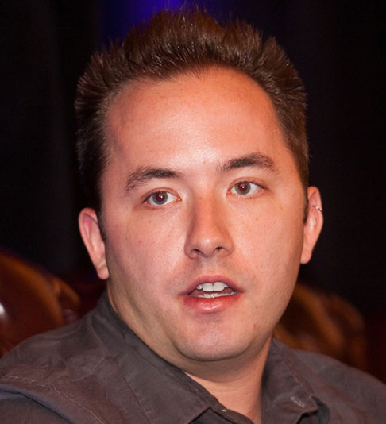

Drop Dropbox

For more on why you should #DropDropbox, please see the main page
Condoleezza Rice advocates illegal NSA surveillance
In 2005, Dropbox's newest Board member Condoleezza Rice went on national TV and defended the NSA's illegal warrantless surveillance program:
The interview1 took place just two days after the New York Times revealed the Bush administration's authorization of illegal, warrantless surveillance of Americans. At the time, the NYT reported:
Under a presidential order signed in 2002, the intelligence agency has monitored the international telephone calls and international e-mail messages of hundreds, perhaps thousands, of people inside the United States without warrants over the past three years
We now know the NSA program went much, much further than we could have possibly imagined at the time. What we now know is that the illegal NSA surveillance program monitored every American — every phone call, every cell phone, and every email sent. We learned that the NSA broke into American companies' servers and monitored as much communication as they could. And that's just the tip of the iceburg.
We didn't know how far it went, but Condoleezza Rice did know.
Rice not only spoke in favor of the Bush administration's warrantless wiretap program and expansive domestic surveillance program, she authorized the illegal, warrantless wiretapping of UN Security Council members.
Given everything we now know about the NSA warrantless surveillance program, and Rice's role in it, why on earth would we want someone like her involved with Dropbox, an organization we are trusting with our most important business and personal data? Dropbox has said:
Our commitment to your rights and your privacy is at the heart of every decision we make
There's an easy way for Dropbox to do the right thing and show us they care about our rights:
Tell Drew Houston: drop Condoleezza Rice or we will #DropDropbox

Tell Drew Houston: unless you remove Condoleezza Rice from the Dropbox Board, I, and/or my organization, will stop using Dropbox and move to an alternative cloud storage provider:
Back to main #DropDropbox page
Dropbox logo is trademark Dropbox Inc. and used under the Fair Use doctrine of US Copyright law.
1. Full video transcript
Full Drew Houston interview